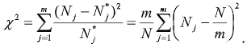
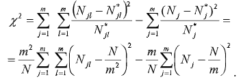
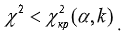

2.3 Перевірка якості послідовностей випадкових чисел, що обчислюються алгоритмічними методами
|
Тест частот |

|
|
Гіпотеза про рівномірність розподілу чисел xi, i = 1,N в інтервалі числової осі (0,1) перевіряється за
допомогою критерію Пірсона.
Для цього обчислюється значення випадкової величини:

Очевидно, чим менше розрізняються емпіричні і теоретичні частоти, тим
менше значення величини Χ2. Отже, вона характеризує близькість емпіричного і теоретичного розподілу. |
Тест пар |
|
|
Тест пар служить для перевірки незалежності псевдовипадкових чисел
xi, i = 1,N, тобто відсутності кореляції
між ними.
Кількість пар співпадає з кількістю чисел N. Внаслідок залежності пар функція Χ2 буде розподілена згідно із законом, що відрізняється від розподілу «хі-квадрат». Тому для обчислення значень величини Χ2 в даному випадку використовується більш складна формула, яка включає компонент, що компенсує цю відмінність:

Обчислена таким чином величина розподілена згідно із законом
Χ2 з k = m(m-1) ступенями свободи. Гіпотеза про незалежність псевдовипадкових чисел xi, i = 1,N приймається, якщо для вибраного рівня значущості Α виконується умова:

Інакше гіпотеза відхиляється.
|